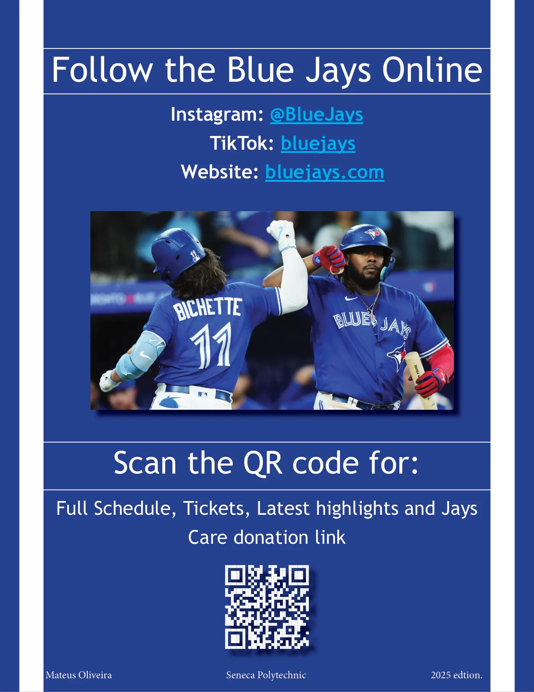

Interactive PDF
Toronto Blue Jays Fan Guide
A six-page interactive fan guide to Toronto's baseball team, built to be read on screen.

- Year
- 2025
- Course
- Software Training (GRA120)
- Tools
- InDesign
- Type
- Interactive PDF
The guide covers team history, today's stars, the Rogers Centre and where to follow the team online, with player cut-outs, a stadium backdrop and a QR code that links to schedules and tickets.
Student project. Team logos, mascot and photography are the property of their respective owners and are used for educational purposes.


